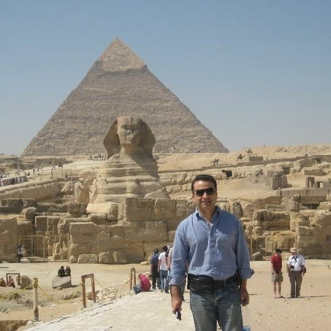
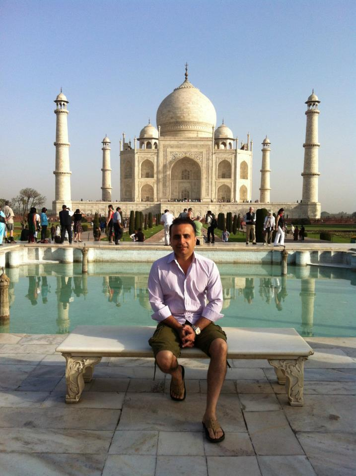

A Children’s Playground
TEMPORARY COVER
TEMPORARY COVER
A Children’s Playground
What happens when fundamentally decent people find themselves on opposite sides of a war?
Discover the novel →
ABOUT UMAR
Umar Rafi’s life has been an accidental journey across countries, cultures and perspectives. Born in Pakistan, he has lived in Pakistan, Iraq, Canada, the United States, the UAE, Saudi Arabia, Lebanon and Malaysia. Along the way, he has moved through worlds that rarely occupy the same biography—from the United States Air Force Academy, aviation and technology to finance, artificial intelligence and writing.
His experiences have taken him across borders often defined by conflict and competing narratives. He has formed lifelong friendships with people of different nationalities, religions and backgrounds, and those encounters have shaped a recurring question in his writing: why do compassionate, well-meaning people so often find themselves on opposing sides?
Across fiction and nonfiction, Umar writes from that intersection of lived experience and curiosity—looking at familiar questions from unfamiliar perspectives, with the hope of making it a little harder to hate people and places we have never taken the time to know.


BOOKS
What happens when fundamentally decent people find themselves on opposite sides of a war?
Discover the novel →What changes when artificial intelligence moves beyond prediction and conversation—and begins to act?
Explore the book →An exploration of Islamic finance through the lens of resilience, risk and antifragility.
Explore the book →ABOUT
Born in Pakistan, Umar Rafi has lived at different stages of his life in Pakistan, Iraq, Canada, the United States, the UAE, Saudi Arabia, Lebanon and Malaysia.
His path has crossed mathematics, computer science, machine learning, finance, aviation, banking, enterprise technology and artificial intelligence. Those experiences ultimately inform the same curiosity: how people and systems behave when confronted by change, uncertainty and competing ways of seeing the world.
Read Umar’s story →WRITING ACROSS WORLDS
“Look at familiar questions from unfamiliar perspectives.”
The subjects change. The curiosity remains: what happens when we look at a familiar question from another side?
WRITING
Essays, poetry and reflections—an evolving part of this site.
Literature, technology, finance, culture and the questions that connect them.
Verse, translations and work that belongs outside conventional categories.
Shorter observations shaped by places, people, history and experience.
“The greatest gift one can give someone is to make them laugh and to make them think.”
— Umar Rafi
MEDIA & SPEAKING
Available for selected interviews, podcasts, panels and speaking engagements.
Media & speaking